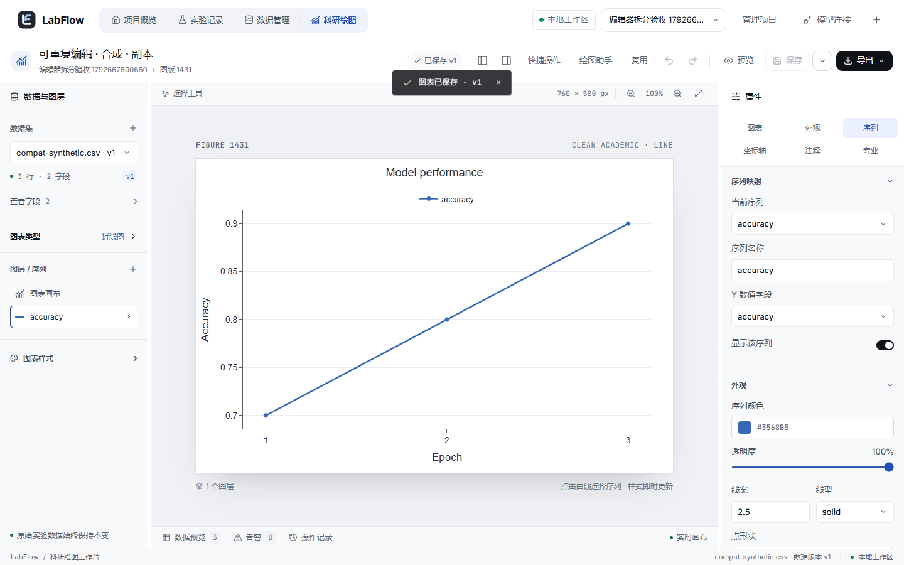

LOCAL
本地优先 · 无需账号 · 原始数据本地保存
从实验数据到论文插图，
每一步都可追溯。
面向 AI / ML 研究生的实验记录与科研绘图工作台。导入 CSV，生成 11 类论文图，导出嵌入字体的矢量 PDF。原始数据始终只读。
React 19 · TypeScript · Plotly · Java 21 · Spring Boot 3

真实工作台截图 · 合成演示数据 · 本地运行
01 · REPRODUCIBLE
可复现，是默认值。
每一张图都能回到它的数据版本和处理规则。审稿人问「这个数怎么来的」，你能直接打开给他看。
01→
原始数据
CSV / TSV / TXT / XLSX / JSON / JSONL 导入后只读保存，追加新版本而不是覆盖。
SHA-256 · 内容指纹
02→
处理规则
过滤、排序、分组汇总都记为显式规则，派生数据保留来源。
group_by model → mean ± SEM
03→
图表版本
每次保存一个版本，可回看、可恢复，撤销重做不丢。
schema v1 · 版本快照
04✓
论文级导出
矢量 PDF 嵌入内置 Noto Sans SC；SVG 保留文本，按 mm 设尺寸，PNG 可选 DPI。
PDF / SVG · 88 mm · PNG 600 DPI
02 · CHARTS
11 类科研图，
覆盖实验论文的常见需求。
支持多序列、真实误差列和区间带。模型评估图直接从标签和分数计算，不用先在 Python 里算好。
折线 + 区间带mean ± SEM
分组柱状图3 datasets × 3 models
ROC / PRAUC · AP 自动标注
混淆矩阵P / R / F1 · macro
箱线图分布 · 离群点
ECDF经验累积分布
以及
散点图
热力图
小提琴图
直方图
PR 曲线
下方为图型示意，用于说明表现形式，不代表实验结果。完整支持折线、分组柱状、散点、热力图、箱线、小提琴、直方、ECDF、ROC、PR 与混淆矩阵。
03 · ASSISTANT
说出想改的地方。
先预览，再应用。
绘图助手使用 13 个受校验的工具：3 个只读，10 个可预览修改。手动绘图无需模型；授权后会发送配置与字段摘要，模型服务可能计费。每次调整先成为提案，你确认后整组应用，一步就能撤销。
- 与你的手动编辑合并，有冲突时拦截
- 限制步数、预算与超时，随时可以取消
- 可选接入兼容 Chat Completions 且支持工具调用的模型；密钥仅保留在本机后端内存
把图例放到右侧，Proposed 加粗，字号改成 16。
提案 · 3 处修改
已通过校验 · 预览中
set_legend · positiontop → right
set_series · Proposed.width2 → 3
set_style · font.size12 → 16
应用这组调整
继续修改
确认后只更新草稿，正式保存仍由你决定。
交互流程示意 · 实际提案以校验结果为准
192前端测试（Vitest）· 2026-10-23
12最新专项浏览器流程（助手 / 连接 / 首页）
在本机跑起来，
一个脚本完成。
需要 Node 22.12+、Maven 3.6.3+、MySQL 8 二进制；脚本准备项目私有 JDK 21。首次联网下载免费依赖，核心工作台无需模型服务。
# Windows · 首次运行会准备依赖
# 在已下载的项目根目录运行
> powershell -ExecutionPolicy Bypass -File .\scripts\start.ps1
# 打开 http://127.0.0.1:5176